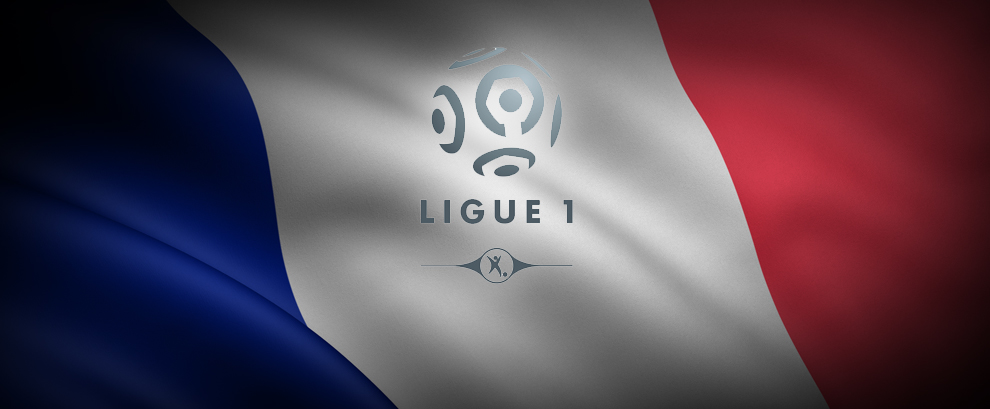

EPL
The Premier League is a corporation in which the member clubs act as shareholders. Seasons run from August to May with each team playing 38 matches (playing all 19 other teams both home and away).[1] Most games are played on Saturday and Sunday afternoons. The Premier League has featured 47 English and two Welsh clubs since its inception, making it a cross-border
La Liga
The Campeonato Nacional de Liga de Primera División,[a] commonly known as La Liga[b] (La Liga Santander for sponsorship reasons with Santander),[2] is the men's top professional football division of the Spanish football league system.[3] Administered by the Liga Nacional de Fútbol Profesional
Bundesliga
The Bundesliga (German: [ˈbʊndəsˌliːɡa] (About this soundlisten); lit. English: "Federal League", sometimes referred to as the Fußball-Bundesliga [ˌfuːsbal-] or 1. Bundesliga [ˌʔeːɐ̯stə-]) is a professional association football league in Germany and the football league with the highest average stadium

Ligue 1
Ligue 1 [a], also called Ligue 1 Conforama for sponsorship reasons with Conforama,[1] is a French professional league for men's association football clubs. At the top of the French football league system, it is the country's primary football competition. Administrated by the Ligue de Football